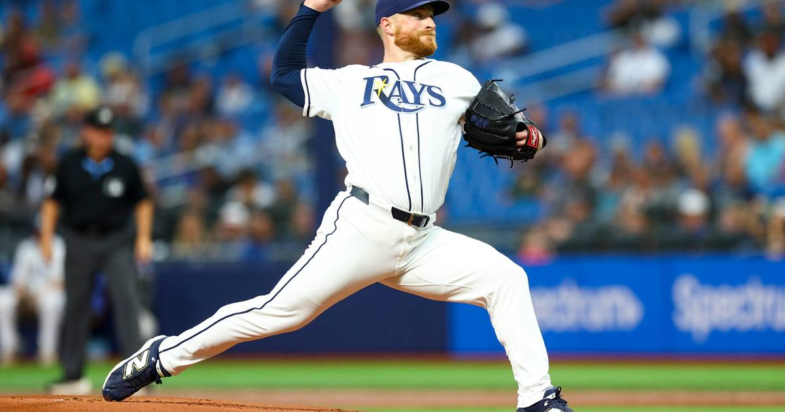

Rasmussen Starts for the Rays Against Henderson in Game 2
Drew Rasmussen gets the ball for Tampa Bay tonight at 8 p.m. ET on FOX opposite Brewers rookie Logan Henderson, with Milwaukee up 1-0 after Friday's 3-2 win.

Disclosure: this post contains affiliate links. I earn a commission on qualifying purchases.
Drew Rasmussen gets the ball for Tampa Bay tonight at 8 p.m. ET on FOX, opposite Brewers rookie Logan Henderson, and the Rays are handing their season to a pitcher who has not lost since the All-Star break (BVM Sports).
The matchup
Rays starter: Drew Rasmussen
Brewers starter: Logan Henderson
When: Tonight, 8 p.m. ET on FOX
Series: Milwaukee leads 1-0
Rasmussen's unbeaten run since the All-Star break is the whole story of this start. Tampa Bay isn't just handing him a game — it's handing him the series' turning point, against a rookie on the other side.
How we got here
Milwaukee leads 1-0 after Friday's 3-2 win (theScore), and history sits with the team that takes Game 1. That's what makes tonight a swing game in the truest sense: a Rays win erases the Game 1 edge and resets the series, while a Brewers win turns history's lean into a 2-0 stranglehold.
What to watch tonight
This one comes down to whether Rasmussen's second-half form holds on the biggest stage. He hasn't lost since the All-Star break — if that run survives one more night, the Rays head home (or onward) with the series tied. If Henderson and the Brewers end it, Milwaukee takes control of the Fall Classic.
Watch
Source: "RAYS vs. BREWERS: World Series Full Game 1 Highlights (October 23) | 2026 MLB Postseason" from the official MLB channel — full Game 1 highlights, the 3-2 Brewers win that sets up tonight's Game 2.
Gear up: Fanatics